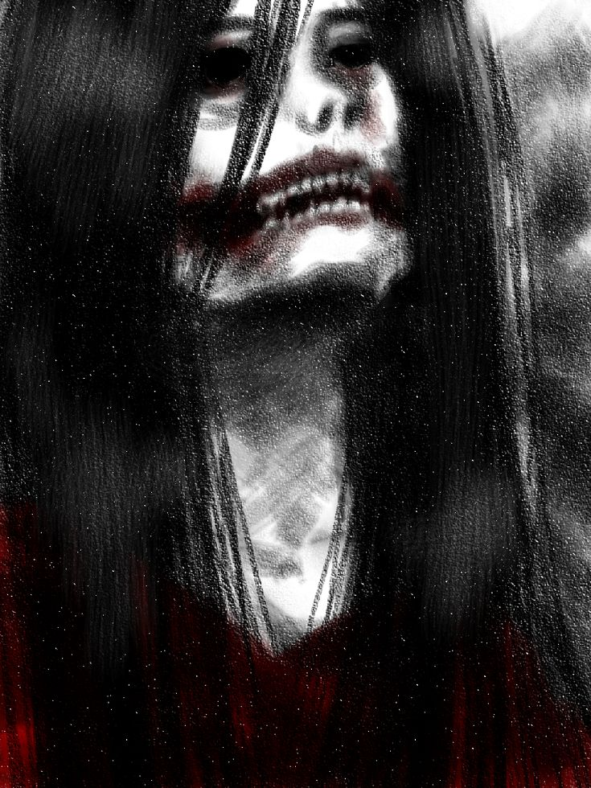

Kuchisake-onna
In Japanese folklore, Kuchisake-onna is a vengeful spirit known for her distinctive appearance and deadly curse.
Folklore after dark
Ancient curses. Forgotten souls. Endless nightmares.

In Japanese folklore, Kuchisake-onna is a vengeful spirit known for her distinctive appearance and deadly curse.

Kashichikusama is a mysterious spirit from Japanese horror stories, feared for her unsettling presence.

If you see a woman standing alone in the snow, don't ask why she's there. Just keep walking.

You locked every door before sleeping. So why is the old man already sitting in your house?

A fearsome, many-headed serpent from Japanese mythology, said to haunt the land with its immense power.